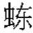

汉字拉丁化[483]的方法一出世，方块字系的简笔字和注音字母[484]，都赛下去了，还在竞争的只有罗马字拼音[485]。这拼法的保守者用来打击拉丁化字的最大的理由，是说它方法太简单，有许多字很不容易分别。
这确是一个缺点。凡文字，倘若容易学，容易写，常常是未必精密的。烦难的文字，固然不见得一定就精密，但要精密，却总不免比较的烦难。罗马字拼音能显四声，拉丁化字不能显，所以没有“东”“董”之分，然而方块字能显“东”“

”之分，罗马字拼音却也不能显。单拿能否细别一两个字来定新文字的优劣，是并不确当的。况且文字一用于组成文章，那意义就会明显。虽是方块字，倘若单取一两个字，也往往难以确切的定出它的意义来。例如“日者”这两个字，如果只是这两个字，我们可以作“太阳这东西”解，可以作“近几天”解，也可以作“占卜吉凶的人”解[486]；又如“果然”，大抵是“竟是”的意思，然而又是一种动物的名目，也可以作隆起的形容[487]；就是一个“一”字，在孤立的时候，也不能决定它是数字“一二三”之“一”呢，还是动词“四海一”[488]之“一”。不过组织在句子里，这疑难就消失了。所以取拉丁化的一两个字，说它含胡，并不是正当的指摘。主张罗马字拼音和拉丁化者两派的争执，其实并不在精密和粗疏，却在那由来，也就是目的。罗马字拼音者是以古来的方块字为主，翻成罗马字，使大家都来照这规矩写，拉丁化者却以现在的方言为主，翻成拉丁字，这就是规矩。假使翻一部《诗韵》[489]来作比赛，后者是赛不过的，然而要写出活人的口语来，倒轻而易举。这一点，就可以补它的不精密的缺点而有余了，何况后来还可以凭着实验，逐渐补正呢。
易举和难行是改革者的两大派。同是不满于现状，但打破现状的手段却大不同：一是革新，一是复古。同是革新，那手段也大不同：一是难行，一是易举。这两者有斗争。难行者的好幌子，一定是完全和精密，借此来阻碍易举者的进行，然而它本身，却因为是虚悬的计划，结果总并无成就：就是不行。
这不行，可又正是难行的改革者的慰藉，因为它虽无改革之实，却有改革之名。有些改革者，是极爱谈改革的，但真的改革到了身边，却使他恐惧。惟有大谈难行的改革，这才可以阻止易举的改革的到来，就是竭力维持着现状，一面大谈其改革，算是在做他那完全的改革的事业。这和主张在床上学会了浮水，然后再去游泳的方法，其实是一样的。
拉丁化却没有这空谈的弊病，说得出，就写得来，它和民众是有联系的，不是研究室或书斋里的清玩，是街头巷尾的东西；它和旧文字的关系轻，但和人民的联系密，倘要大家能够发表自己的意见，收获切要的知识，除它以外，确没有更简易的文字了。
而且由只识拉丁化字的人们写起创作来，才是中国文学的新生，才是现代中国的新文学，因为他们是没有中一点什么《庄子》和《文选》之类的毒的。
十二月二十三日。
注 释
[482] 本篇最初发表于1936年1月11日《时事新报·每周文学》，署名旅隼。
[483] 汉字拉丁化 1931年，在海参崴举行的中国新文字第一次代表大会上，由吴玉章等拟定了“拉丁化新文字”方案，其特点是用拉丁字母拼写汉语，不标记声调。1933年起国内各地相继成立团体，进行推广。1935年12月曾由上海中文拉丁化研究会发起《我们对于推行新文字的意见》签名运动，至次年5月，有蔡元培、柳亚子、鲁迅、郭沫若、茅盾等文教界人士六百六十八人签名。
[484] 注音字母 1913年2月北洋政府教育部召开读音统一会，会上通过由会员钱玄同、许寿裳、鲁迅等提出的汉字注音方案，共字母三十九个，称为注音字母，1918年公布。1930年国民党政府教育部将它改名为“注音符号”，重新公布。
[485] 罗马字拼音 参看本卷第81页注〔3〕。
[486] “日者” 《史记》有《日者列传》，记汉初卜者司马季主事。
[487] “果然”是一种动物的名目，见洪迈《夷坚续志》：果然“似猿而大”。“果然”作隆起的形容，见《庄子·逍遥游》：“腹犹果然。”
[488] “四海一” 唐代杜牧《阿房宫赋》：“六王毕，四海一。”“一”作“统一”解。
[489] 《诗韵》 指供写诗用的一种韵书，按字音的五声（阴平、阳平、上、去、入）分类排列。